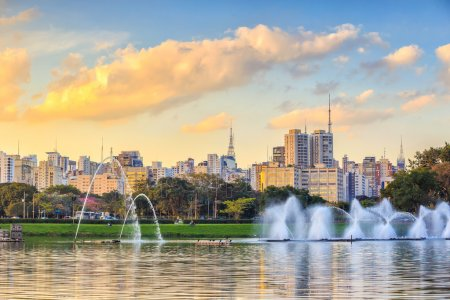
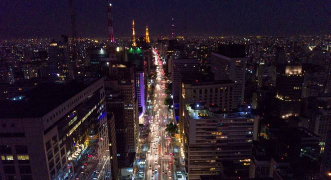
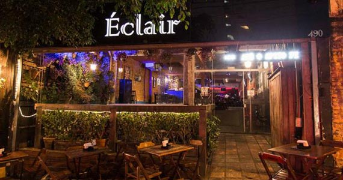

O Parque Ibirapuera

Um dos cartões postais da cidade, o parque dispõem de mais de 1,5 km² de área verde, lagos artificias, e pista de copper e ciclismo. E se isso não fosse suficiente, o parque costuma ser palco de diversos eventos culturais ao longop do ano.
A Avenida Paulista

Um dos principais centros financeiros da cidade, a Avenida Paulista também possui diversas opções de entretenimento. Endereço do Museu de Arte de São Paulo, MASP, do Teatro Gazeta e muitos e outros, a região é de fácil acesso graças as diversas lihas de ônibus que cruzam a avenida e á linha de mêtro que passa de baixo dela.
Os Bares da Vila Madalena

Depois de um dia de trabalho, nada melhor do que um bom chopp, um petisco e uma conversa em uma mesa de bar. Opções de sobra na região das ruas Aspicuelta, Fradique Coultinho e Wisard.Uma multidão descolada frequenta os bistrôs e bares descontraídos, e os espaços de música ao vivo abrigam apresentações de soul, funk e samba